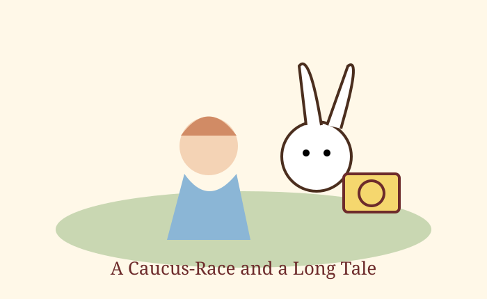

Chapter 3
A Caucus-Race and a Long Tale

Image source/license: original class project illustration, public domain.
They were indeed a curious-looking party that assembled on the bank: the birds with draggled feathers, the animals with their fur clinging close to them, and all dripping wet and cross.
The first question of course was how to get dry again. After a few minutes it seemed quite natural to Alice to find herself talking familiarly with them.
At last the Mouse, who seemed to be a person of authority among them, called out, “Sit down, all of you, and listen to me!”
The best thing to get them dry, according to the Dodo, was a Caucus-race. Everyone began running when they liked and left off when they liked, so it was not easy to know when the race was over.